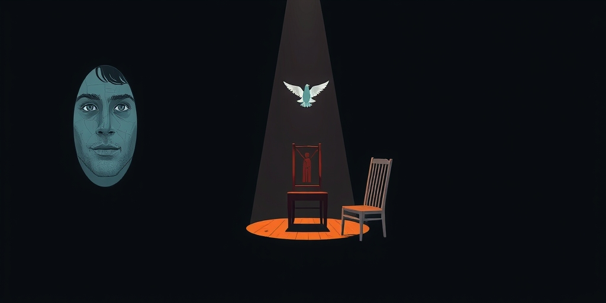
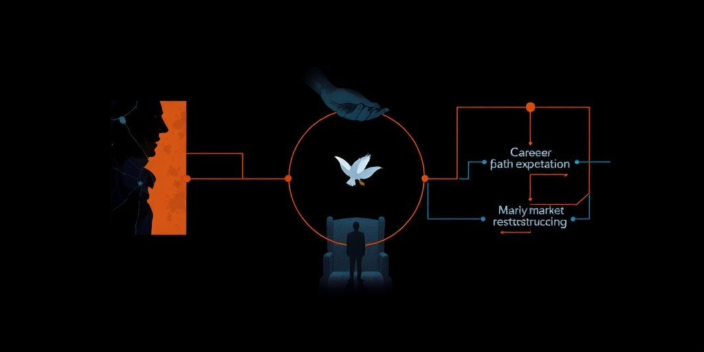
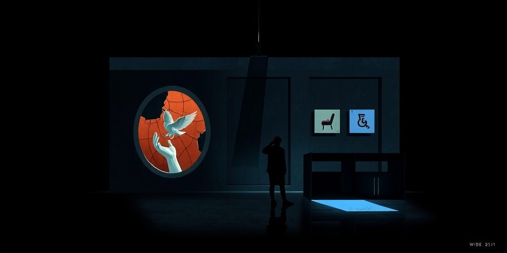

小汪老师的成长洞察 · 属于你的成长专栏
全国男性比女性多3000万，但本科校园里100个女生只对应58个男生。那些多出来的男性去哪了？答案不在大学里，在劳动力市场的另一端。这个比例失衡不是临时波动，它会通过家庭预期、劳动力市场和婚恋匹配三道反馈回路自我强化。未来20年的社会结构，正在被今天的高校花名册重新定义。
2002年，男性占本科生的56%。到2007年开始暴跌，现在只剩40%。内蒙古招6万本科生，男生1.8万。广西招14万，男生4万出头。云南招12万，10万是女生，男生只招了2万。河南、山东、贵州几个高考大省，本科男生比例全部低于50%。这是全国性的、系统性的现象，不是某个地区或某个年份的偶然波动。
核心矛盾在这里：全国总人口男性比女性多3000万，但本科校园里男生反而成了少数。那些多出来的男性去哪了？他们没有消失。他们在外卖站点、快递网点、建筑工地、工厂流水线上。劳动力市场用另一种方式完成了对他们的筛选——更快的、更直接的、不需要等待四年的筛选。
过去几十年，教育系统从选拔智力逐渐走向选拔服从。标准答案、大题模板、作文套路——考的不是思维原创性，是你能在多大程度上遵循预设路径。平时成绩占比越来越高，课堂表现、作业完成度、纪律遵守，这些在综合评价中的权重持续上升。这不是一个性别中性的转变。
女生在青春期前额叶皮层发育更早，自控力和延迟满足能力在这个年龄阶段普遍强于男生。这不是能力差异，是发育时钟的差异。同一个年龄、同一场考试，男生和女生不是在用同样的大脑版本参加。教育流水线的评价节点和男生发育曲线之间存在一个系统性的相位差。高考本质上是一场巨大的延迟满足测试——为三年后的一个分数忍受每一天的枯燥刷题。发育更晚的群体在这个测试中处于系统性劣势。这不是谁的错，是系统的时钟和生物的时钟没有对准。
男生有更多不上大学也能挣钱的选择。外卖、快递、工地、工厂、技工。一个18岁男生进厂或跑外卖，月收入可能超过同龄本科毕业生的起薪。这个短期信号极其强烈。一个发育晚的男生，在延迟满足能力最弱的阶段，面对一个即时报酬足够有诱惑力的选项——这个选择在个体层面是理性的。
女生面对的体力劳动替代路径少得多。社会对女性从事体力劳动和户外高危工种的接受度低，制造业和服务业中适合女性的岗位又普遍要求学历门槛。所以女生必须上大学的动机更强——不是更爱学习，是选项更少。这是一个经典的推力-拉力结构：男生被劳动力市场拉走，女生被劳动力市场推向大学。两股力量同时作用，加速撕裂了高校的性别比例。

这三重力量不是独立的，它们形成了反馈回路。第一个回路是家庭预期的自我实现。父母看到男孩读书不划算、女孩必须读书的格局后，在家庭教育阶段就开始强化分化。对女孩的教育投入更多、监管更严、期望更高。对男孩更容易接受读书不行就去干活。这不是重女轻男，是家庭在观察到真实劳动力市场信号后的理性适配。但这个适配本身就是一个正反馈——家庭教育投入的差距进一步拉大教育产出的性别差距，进而验证和强化男孩读书不划算的信号。一个自我实现的预言闭环。
第二个回路是劳动力市场的路径锁定。被拉出大学的男生进入外卖、快递、工地等职业，这些岗位的共同特征是技能积累曲线极平。送五年外卖的收入和送一年外卖的收入差异极小。相比之下，大学毕业生的收入曲线是上扬的——初期低，但职业技能和社交网络随时间复利增长，十年后可能远超体力劳动路径的收入上限。问题在于，18岁的时候不可能感知到35岁的收入差距。这个信息不对称只会在十年后被揭示，而那时路径已经锁死了。
第三个回路是婚恋市场的结构性重塑。如果本科男女比持续接近2:1，未来15年婚恋市场的匹配结构会发生深刻变化。本科女性面对本科男性的供给短缺，本科以下男性面对本科以下女性的供给短缺——因为大量女性被大学吸走了。这会产生一种教育梯度挤压：上端女性被迫向下兼容，下端男性被迫向上竞争。婚恋市场从同层匹配走向跨层挤压，这在历史上并不常见。

最底层的问题：教育系统的设计目标是什么？如果目标是选拔能坐得住的人，那它在技术上可能越来越高效。但它在社会层面的产出是一个性别结构畸形的高等教育人口。一个系统如果持续产出和人口基础相反的比例，不应该首先问某群人出了什么问题。
应该首先问这个系统本身有没有一个结构性的筛选偏差。教育流水线的评价参数——服从性、延迟满足、坐得住——这些不是中性的。它们在特定的发育阶段对特定群体的筛选压力更大。当这个筛选结果开始通过家庭预期、劳动力市场和婚恋匹配三道回路自我强化时，它就不再是一个教育问题。它是一个社会结构再生产的问题。今天的高校花名册，正在重新定义未来20年的社会分层逻辑。

写给你的话
这篇文章没有给出解决方案。不是因为问题不值得解决，而是因为真正的解决方案不在教育系统内部。调整评价参数只能改变筛选结果，改变不了筛选本身。更深层的问题在于：一个社会为18岁的人提供了哪些路径，这些路径的长期回报曲线是什么样的，以及18岁的人有没有能力在发育最不均衡的年龄做出影响一生的判断。如果读完这篇文章你开始重新想教育系统到底在筛选什么，而不是在想男生该怎么办，那这篇文章就完成了它的任务。
小汪老师的成长洞察 · 属于你的成长专栏